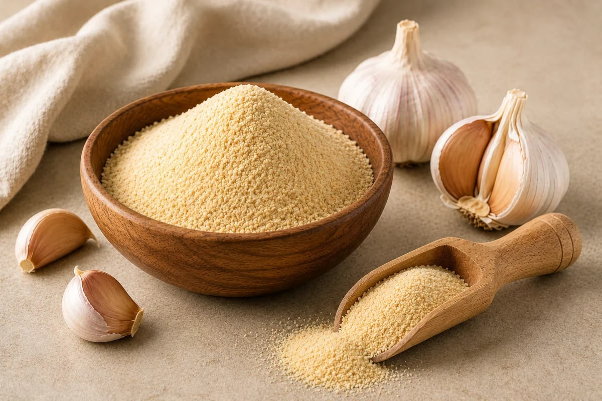

Quality
Quality You Can Count On
At Kasturi Export LLP, quality is considered throughout the manufacturing journey—from raw material selection to final packaging.
Fresh Raw MaterialsWe begin with carefully selected fresh onions and garlic.
Controlled ProcessingOur manufacturing process is structured to maintain consistency throughout production.
Hygiene FocusedClean and hygienic processing is an important part of our production approach.
Consistent ProductWe aim to deliver consistent powder quality suitable for different food applications.
Secure PackagingProducts are packed with attention to safe handling, storage and transportation.
Freshness in. Quality out.

Our Standards
Built around hygiene, consistency and trusted production.
Fresh Selection
Only carefully chosen onions and garlic carry into the production line.
Controlled Flow
Every production step is planned to maintain uniformity and reliability.
Packaging Care
Final packaging supports product integrity and efficient handling.
Business Support
We focus on dependable supply for commercial and manufacturing partners.